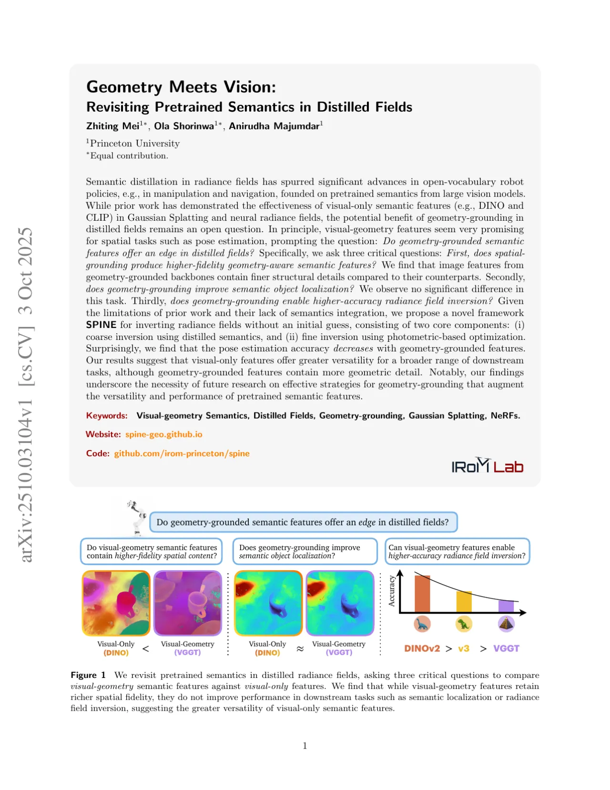
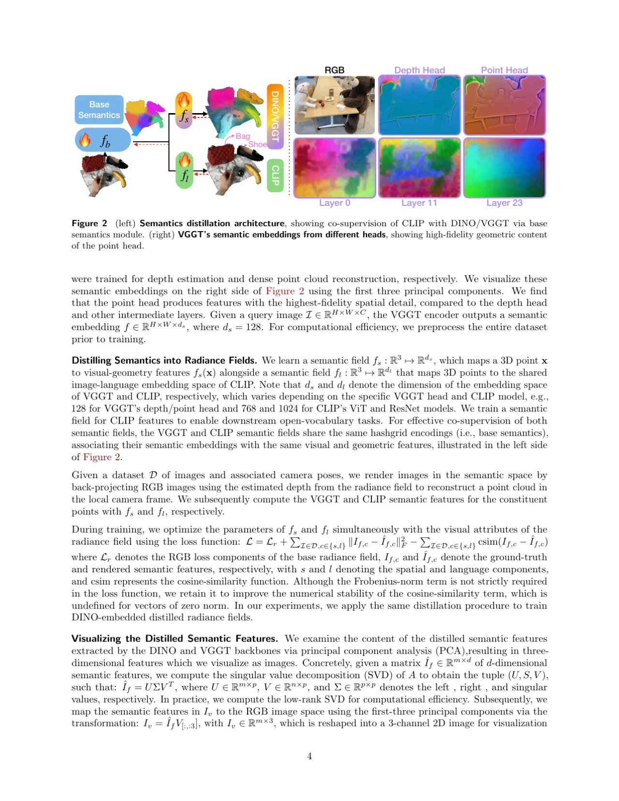
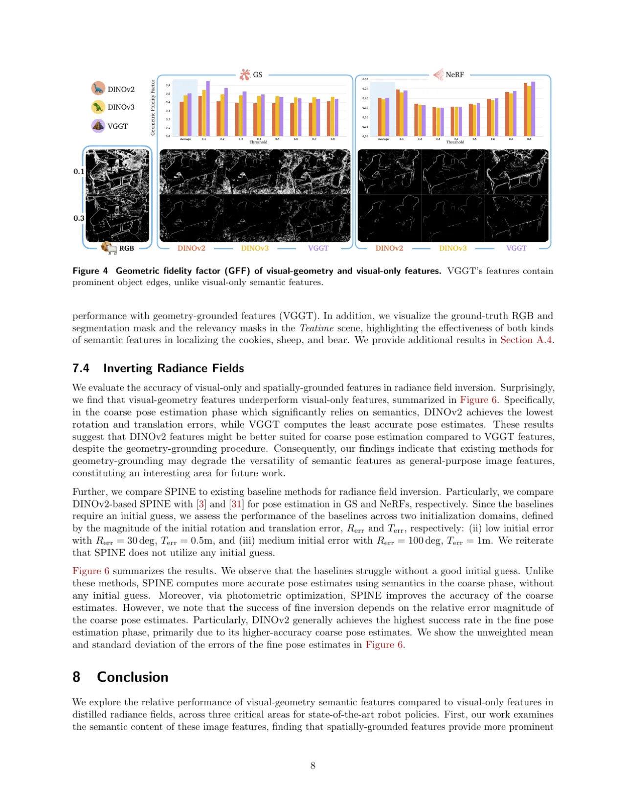
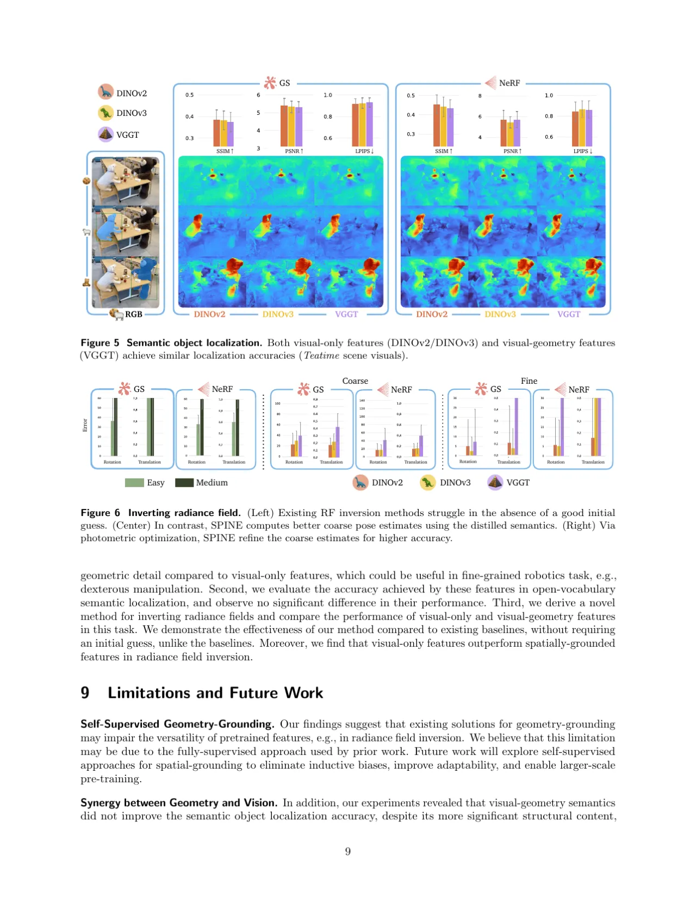
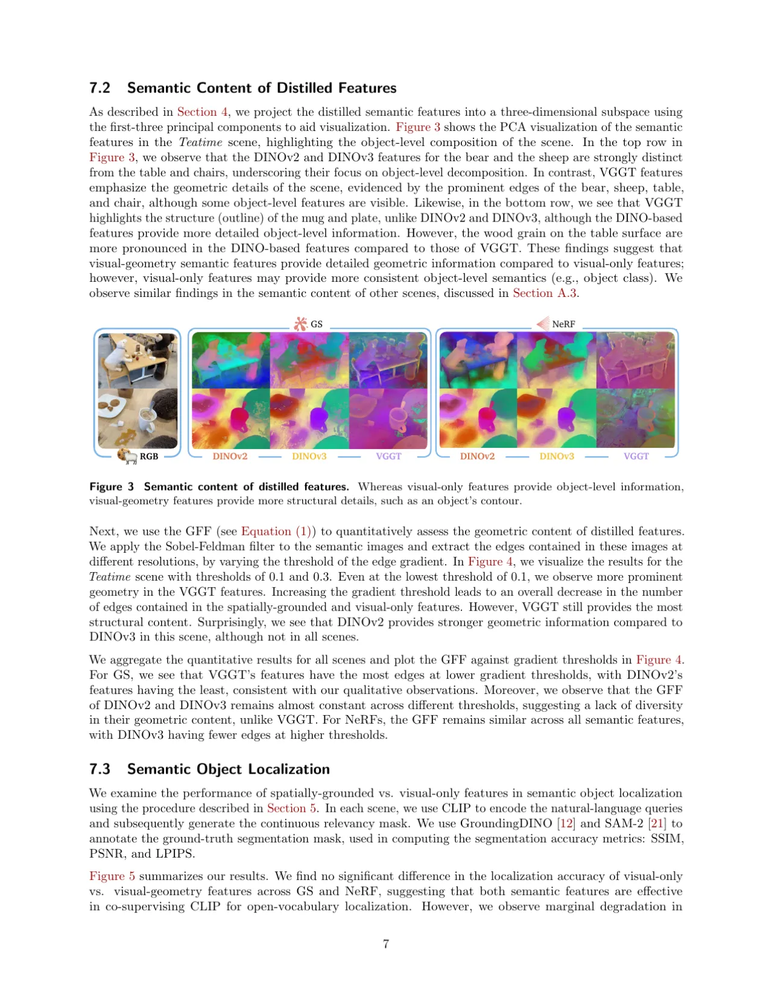

本文系统研究了几何感知语义特征（visual-geometry features，如 VGGT）与纯视觉语义特征（visual-only features，如 DINOv2/DINOv3）在蒸馏辐射场中的表现差异，针对机器人应用中的三个关键下游任务展开对比分析，并提出了无需初始猜测即可完成辐射场反演的新框架 SPINE。
将大型视觉基础模型的语义特征蒸馏到辐射场（NeRF / Gaussian Splatting）中，已成为语言条件机器人操控与导航的重要基础。既有方法主要使用 CLIP、DINOv2 等纯视觉特征，而近期提出的 VGGT（Visual Geometry Grounded Transformer）则通过 3D 重建任务目标训练，获得了几何感知语义特征。直觉上，视觉-几何特征对位姿估计等空间任务应更有优势——但事实真是如此吗？
"Do geometry-grounded semantic features offer an edge in distilled fields? … Surprisingly, we find that the pose estimation accuracy decreases with geometry-grounded features."

本文提出了两个核心贡献：① 将 VGGT 视觉-几何特征蒸馏至辐射场的完整流程，② SPINE——一个利用蒸馏语义实现无初始猜测辐射场反演的新框架，由"语义粗反演 + 光度细化"两阶段组成。

从 VGGT 的 Depth Head 和 Point Head（分别经深度估计和稠密点云重建训练）中提取语义嵌入，嵌入维度 ds = 128。同时训练 VGGT 语义场 fs 与 CLIP 语言场 fl，二者共享相同的 hashgrid 编码（base semantics），使几何与语言特征关联相同的视觉和几何基底。
训练损失同时包含 Frobenius 范数项和余弦相似度项，以保证数值稳定性：
L = Lr + Σ‖If,c − Îf,c‖²F − Σ csim(If,c, Îf,c)
粗反演（Coarse Inversion）：训练逆向模型 pψ，将语义嵌入（VGGT 使用 camera embedding，DINO 使用 class token）映射至相机位姿的高斯混合模型（GMM）分布，以 Lie 代数 so(3) 参数化旋转，无需初始位姿猜测。
细反演（Fine Inversion）：以粗估计为起点，通过新视角合成生成 RGB-D 图像，匹配特征点并求解 PnP 问题（使用 RANSAC 提升鲁棒性），最终得到高精度位姿估计。
为定量刻画蒸馏特征的几何内容，作者提出 GFF：先用 Sobel-Feldman 算子对语义图像和 RGB 图像分别提取边缘，再计算语义边缘相对于 RGB 边缘的保留比例：
GFF = Σ Ie,sem[i,j,k] / Σ Ie,rgb[i,j,k]
GFF 越高，表示语义特征中保留的场景几何信息越多。
在 9 个场景、3 个数据集（LERF、3D-OVS、机器人数据集）上，分别训练 GS 和 NeRF 表示，对比 DINOv2、DINOv3、VGGT 三种语义特征，每场景计算 100 个相机位姿的指标。训练硬件：Nvidia L40 GPU（48GB VRAM）；框架：Nerfstudio，迭代次数 30000。



| 任务 | 最优方法 | DINOv2 | DINOv3 | VGGT |
|---|---|---|---|---|
| 几何保真度（GFF，GS） | VGGT | 最低 | 中等 | 最高 |
| 语义目标定位（SSIM/PSNR/LPIPS） | 三者相当 | 相当 | 相当 | 轻微退化 |
| 粗位姿估计（旋转&平移误差） | DINOv2 | 最低误差 | 中等 | 最高误差 |
| 细化后位姿估计 | DINOv2-SPINE | 最高成功率 | 中等 | 最低成功率 |
论文指出，现有几何感知方案（如 VGGT）采用全监督方法进行空间感知训练，可能引入归纳偏置，削弱特征的通用性，从而导致辐射场反演等任务性能下降。未来工作将探索自监督几何感知方案，以消除归纳偏置、提升适应性并支持更大规模预训练。
实验发现视觉-几何语义虽含有更丰富的结构内容，却未能提升语义目标定位精度，说明几何内容与视觉语义之间缺乏有效协同。未来工作需设计更有效的策略，将几何导向和视觉导向的语义特征融合，以实现更鲁棒的场景理解。
现有几何感知视觉骨干网络（如 VGGT）相较于无感知骨干网络存在显著的计算开销，且目前尚无轻量级变体，难以用于实时机器人应用（如操控任务）。未来工作将探索高效的空间感知视觉骨干架构。
SPINE 的细化阶段成功率直接取决于粗位姿估计的误差大小。由于 VGGT 的粗估计精度较低，其细化阶段的成功率也相应更低。这也说明粗反演模型质量对最终位姿精度至关重要。（stated in Section 7.4）